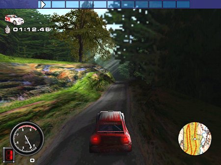
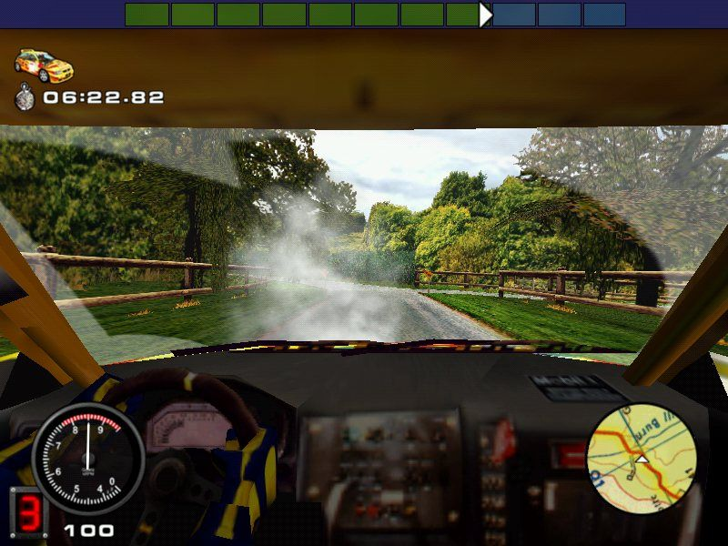
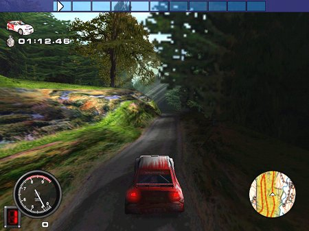
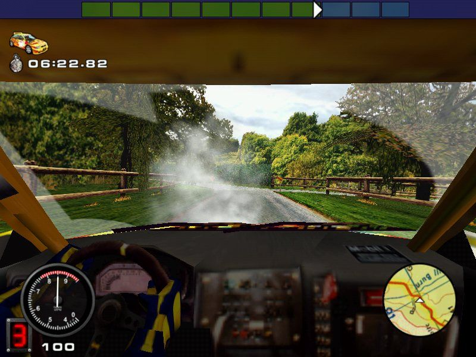

Play date: 2000
Developer: Magnetic Fields
Publisher: Actualize
Memo: wow intro
Description: This is the third rally simulation from Magnetic Fields and Europress (now renamed Actualize). This is a very realistic and highly detailed simulation which accurately recreates the Mobil 1 British Rally Championship. 36 tracks are available, all of which have been created by mapping the real life locations to create a highly accurate racing experience. There are also 22 rally cars to race in which have also been created from their real life counterparts. Although the name of the game is Mobil 1 British Rally Championship, it simply says "Rally Championship" on the front of the box and the game manual. Ignoring this little problem this game is an excellent addition to Europress' rally series and possibly the most realistic racing game ever.

 
